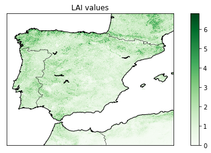

7 FREE sites for downloading satellite images
- USGS
- Landviewer
- Copernicus - "Sentinels Scientific Datahub" - ESA
- Sentinel hub
- NASA earthData search - NASA EOSDIS
- Remote PIXEL
- INPE image catalog
IN-SITU databases
NEON (National Ecological Observatory Network)
Data from 81 field sites across the united states (47 terrestial + 34 aquatic)
Products
USGS
Every one to two days MODIS Aqua and Terra spacecraft views the entire surface of the Earth. In here there is a table with all the MODIS (Moderate Resolution Imaging Spectroradiometer) products available.
For example we can filter LAI and FPAR products. The result MCD15A[3,2]H is a collection of combined MODIS, Terra MODIS or Aqua MODIS. It has a spatial resolution of 500m and a Multi-day temporal resolution.
Copernicus global land service
- Product: Leaf Area Index (LAI)
- Sensor: PROVA-V
- Spatial information: 300m - 1km
- Temporal coverage: Jan 2014 - present, 1999 - present
- url: portal
- output files: GeoTIFF if the product is clipped, otherwise is NETCDF
Example of plotting LAI values from a downloaded product.
from netCDF4 import Dataset
import numpy as np
import matplotlib.pyplot as plt
from mpl_toolkits.basemap import Basemap
data = Dataset(r'C:\IRENE\IPL WORK\copernicus data\c_gls_LAI-RT0_202004200000_GLOBE_PROBAV_V2.0.1.nc')
#get all the data
lats = data.variables['lat'][:]
lons = data.variables['lon'][:]
times = data.variables['time'][:]
# MAP coordinates for SPAIN using ESPG reference
mp = Basemap( llcrnrlat=34, urcrnrlat=45,
llcrnrlon=-10, urcrnrlon=4, resolution='i', epsg=4326)
lat_x = np.where(lats>34)
lat_y = np.where(lats<45)
lon_x = np.where(lons>-10)
lon_y = np.where(lons<4)
long, lat = np.meshgrid(lons[lon_x[0][0]:lon_y[0][-1]], lats[lat_y[0][0]:lat_x[0][-1]])
x, y = mp(long, lat)
cmap = plt.cm.Greens
c_scheme = mp.pcolor(x, y, np.squeeze(lais[0,lat_y[0][0]:lat_x[0][-1], lon_x[0][0]:lon_y[0][-1]]), cmap=cmap)#,
mp.drawcoastlines()
mp.drawstates()
mp.drawcountries()
cbar = mp.colorbar(c_scheme, location='right', pad='10%')
plt.title('LAI values')
plt.show()
